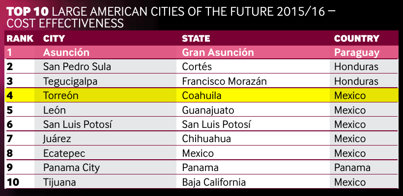

De acuerdo al ranking fDi's American Cities of the Future 2015/2016, de la revista fDiIntelligence (abril 2015), Torreón ocupa el cuarto lugar en América y el primero en México en la categoría de costo beneficio al invertir. La revista fDiIntelligence pertenece al grupo del periódico británico Financial Times.
Acerca del ranking
El ranking califica a 421 ciudades evaluando sus ventajas para la atracción de Inversión Extranjera Directa (IED) en cinco categorías:
- Potencial económico.
- Clima de negocios.
- Capital humano y estilo de vida.
- Costo-beneficio.
- Conectividad.
Las ciudades son clasificadas en muy grandes, grandes, medianas, pequeñas y micro. Torreón entra en la categoría de grandes, compitiendo con ciudades como Seattle, Vancouver, Austin, Orlando, Portland, Denver, Edmonton, Calgary, San José de Costa Rica, Asunción de Paraguay, entre otras. Ejemplos de ciudades mexicanas en esta categoría son San Luis Potosí, Chihuahua, Juárez, Zapopan, Tijuana y León.
Este año Torreón aparece como la cuarta ciudad de América y la primera de México en mejor costo-beneficio al invertir.

Esta categoría pondera los siguientes factores:
- Costo de exportar.
- Costo de importar.
- Costo de establecer un negocio (con indicadores de Doing Business).
- Hoteles de cuatro y cinco estrellas.
- Renta anual en un espacio industrial.
- Renta anual de un espacio de oficina.
- Costo de la electricidad.
- Tasa impositiva corporativa.
- Tasa impositiva total.
- Precios del petróleo.
- Paridad de poder de compra.
- Salario mínimo.
- Salario anual promedio para trabajadores no capacitados.
- Salario anual promedio para trabajadores semi-capacitados.
- Salario anual promedio para trabajadores capacitados.
Datos relacionados
El top 10 de ciudades grandes en la categoría de costo beneficio es:
- Asunción, Paraguay.
- San Pedro Sula, Honduras.
- Tegucigalpa, Honduras.
- Torreón, México.
- León, México.
- San Luis Potosí, México.
- Juárez, México.
- Ecatepec, México.
- Panamá, Panamá.
- Tijuana, México.
Notas sobre la Inversión Extranjera Directa
La Inversión Extranjera Directa (IED) activa la economía doméstica y la planta productiva local: generando nuevos empleos, induciendo la transferencia de tecnologías y conocimientos, fomentando el desarrollo de nuevas cadenas productivas, incrementando la base fiscal y la productividad regional.
El ranking fDi's American Cities of the Future, publicado en Reino Unido, Europa, Asia y América, facilita a los inversionistas (que buscan diversificar riesgos y/o incrementar su capital) identificar las metrópolis del continente americano donde las inversiones empresariales maximizan sus utilidades. De ahí la relevancia del lugar que ocupa Torreón.
Papel del IMPLAN y la Dirección General de Desarrollo Económico
El IMPLAN y la Dirección General de Desarrollo Económico establecieron contacto con ejecutivos del Financial Times proporcionando la información que les fue solicitada; resolviendo dudas y ampliando su conocimiento respecto a Torreón, sus índices de competitividad, sectores estratégicos, perspectivas inversoras y potenciales productivos.
El IMPLAN Torreón (como ejemplo de la información proporcionada) rectificó y amplió la información que el Financial Times tenía respecto al número de empleos que generará Yura en Torreón. La revista no tenía registrada la localización de la inversión, sólo sabía que iba a ser en Coahuila y estaban errados respecto al número de empleos, ellos tenían registrados que iban a ser 300 y se les aclaró que son 4,000. Lo anterior prueba la pertinencia de contar con una organización como el IMPLAN y con un Sistema Metropolitano de Indicadores (SMI) que mediante una plataforma web amigable genere, actualice y difunda internacionalmente la información a México y el mundo de indicadores de productividad, competitividad y bienestar, desarrollo urbano, sustentabilidad, vialidad y transporte, sociedad y buen gobierno.
Otros indicadores que hablan de la competitividad de la Comarca Lagunera:
- Índice de Desarrollo Humano: con un índice de 0.868, Torreón se encuentra arriba del promedio nacional que es de 0.75. Fuente: INAFED-PNUD ,2010.
- Índice de Gini: con un índice de 0.45, Torreón tiene una mejor distribución del ingreso que la media nacional de 0.48. Fuente: Coneval, 2010.
- La Laguna es el primer lugar en Mercado Laboral entre las ciudades de más de un millón de habitantes (IMCO, 2014). Éste subíndice incluye indicadores de condiciones laborales y productividad.
- El portal propiedades.com califica a la Laguna como la cuarta mejor ciudad de México para trabajar.
- Costo-beneficio para inversionistas: el primer lugar en México y el cuarto de América según el índice de competitividad del Financial Times.